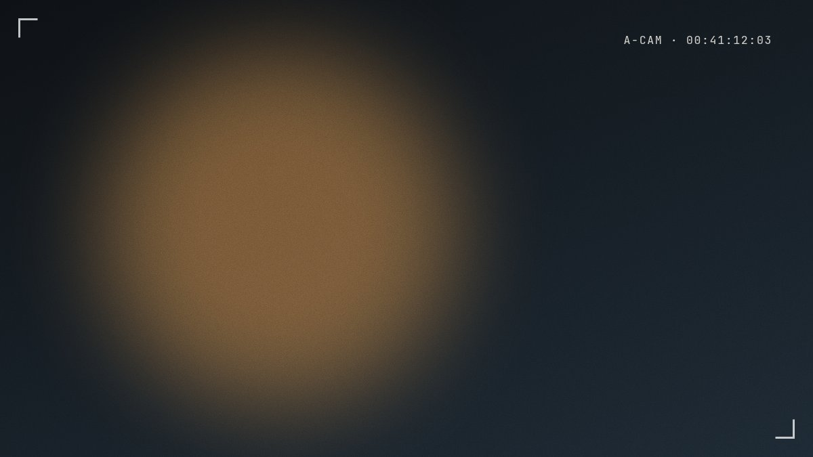
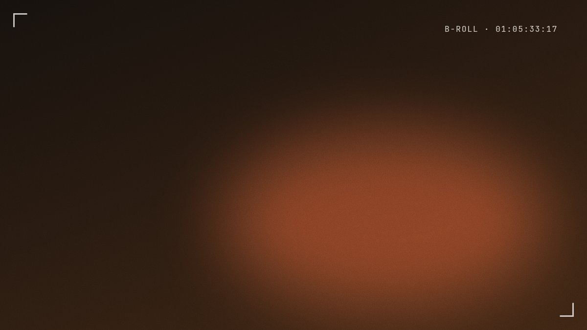
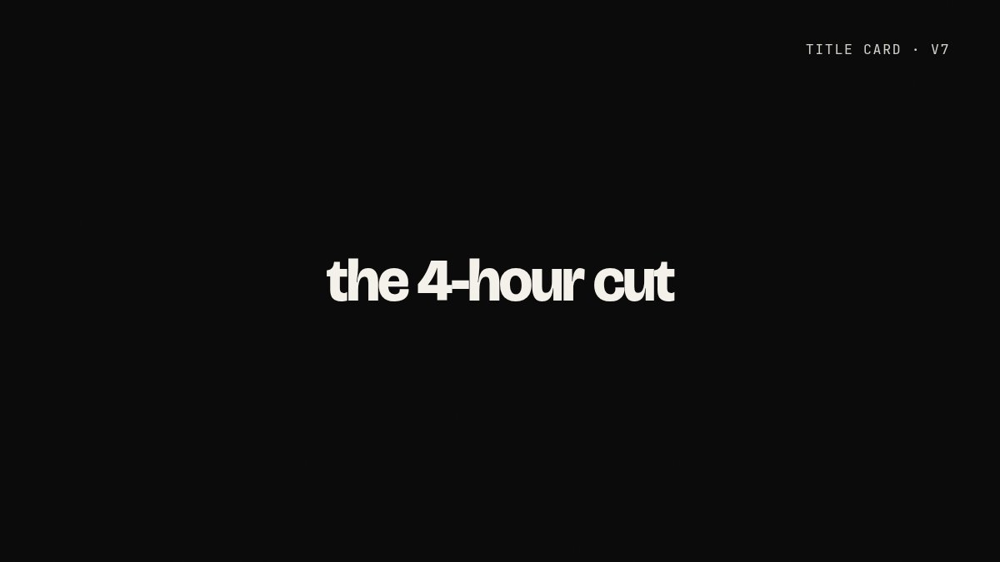

The 4-hour cut.
How a 4-hour founder interview became a 14-minute YouTube documentary that 1.1 million people watched — and 58% finished.

The brief
Kestrel Labs had four hours of raw interview with their founder, a shot list of b-roll, and one goal: a video that new hires and customers would actually watch to the end. No script. No narrator.
The approach
I transcribed everything and cut the story on paper first — three acts, one question per act. Then I built the edit around the moments where the founder stops explaining and starts telling. Chapters every 2–3 minutes give viewers a reason to stay; the sound design is quiet on purpose so the room does the work.
“The best moments were the ones where he forgot the camera was there. The edit just had to get out of the way.”
The result
1.1 million views in 90 days, a 58% completion rate on a 14-minute video, and a series commission for six more episodes. The intro was re-cut twice after launch based on the retention graph — the version you see here is v7.
Deliverables
- 14:20 master, 4K, YouTube-optimized export
- 6 vertical cutdowns for Shorts and Reels
- Animated title sequence and lower thirds (After Effects)
- 3 thumbnail concepts with title testing
Frames from the edit.


